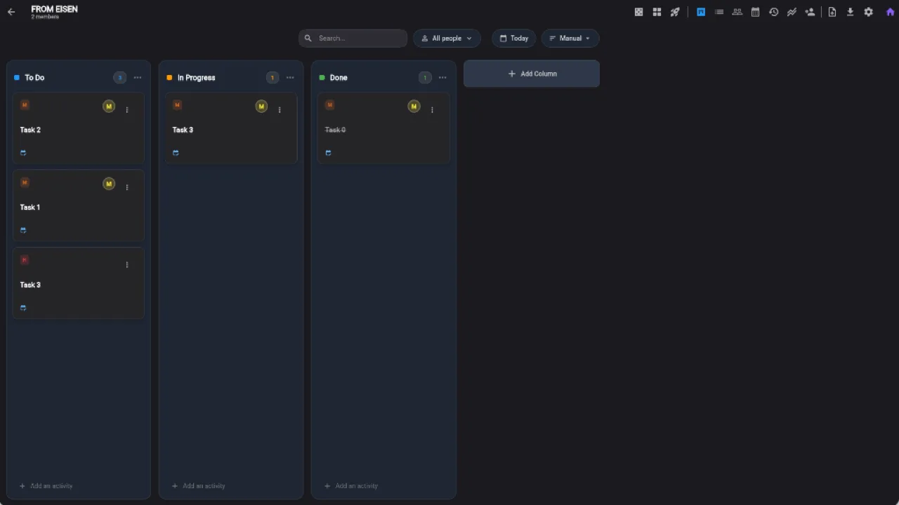
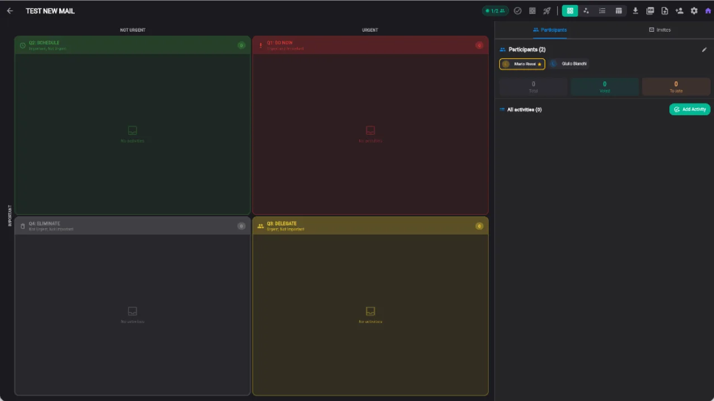
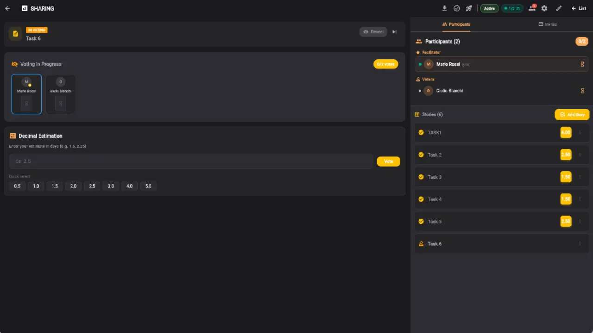
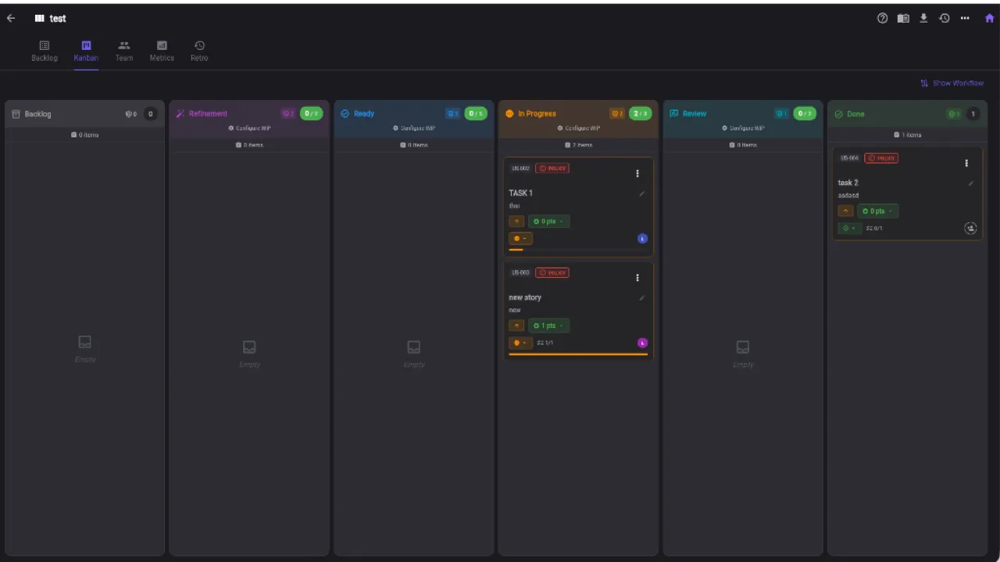
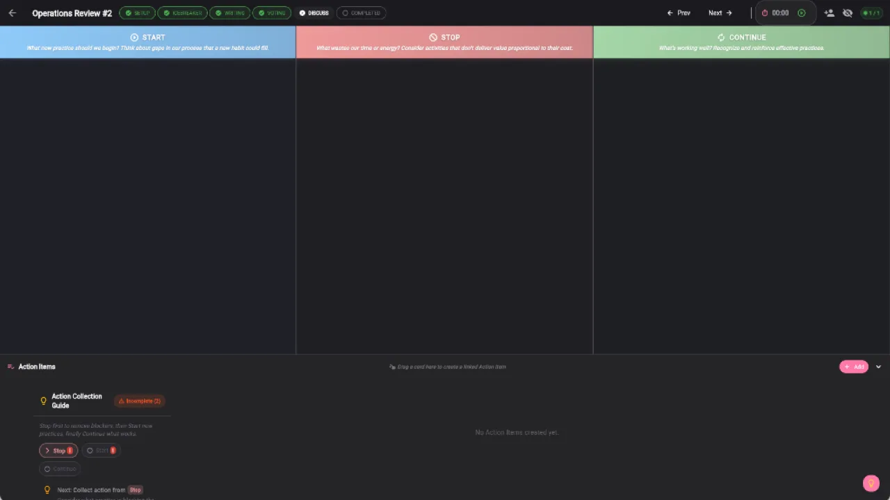

5 Strumenti Agili Gratuiti per il Tuo Team
Kanban board, Matrice Eisenhower, Planning Poker, Sprint Manager e Retrospettiva. Un'unica piattaforma integrata dall'idea alla consegna.
Inizia GratisPerche' i Team Scelgono Keisen
Gratuito per Sempre
5 strumenti completi senza limiti di tempo. Piano Free con 5 progetti, 50 task e 10 inviti per strumento.
5 Strumenti Integrati
Workflow agile completo: raccogli, prioritizza, stima, esegui e migliora. Tutto in un'unica piattaforma.
Collaborazione in Tempo Reale
Invita il team via email con permessi basati su ruoli. Owner, Editor, Viewer e ruoli Scrum dedicati.
Analytics Avanzate
Diagrammi CFD, burndown, velocity chart, monitoraggio WIP e rilevamento bottleneck integrati.
8 Lingue
Interfaccia e guide metodologiche in Italiano, Inglese, Francese, Spagnolo, Portoghese, Russo, Tedesco e Indonesiano.
Zero Installazione
Funziona nel browser su qualsiasi dispositivo. Nessun download, nessuna configurazione.
Keisen in Azione





Cinque Strumenti, Una Piattaforma
Smart Todo e Kanban Board
Board Kanban con colonne personalizzabili, drag and drop, limiti WIP, analytics CFD con lead time e cycle time, sottotask con progresso, commenti con immagini, allegati, tag colorati e vista globale cross-lista.
Ideale per: gestione task quotidiana, workflow team, monitoraggio progetti
🎯Matrice Eisenhower
Prioritizzazione a 4 quadranti per urgenza e importanza con sistema di votazione collaborativa, grafico scatter, lista priorita' automatica, matrice RACI per l'assegnazione dei ruoli e condivisione con il team.
Ideale per: decisioni strategiche, prioritizzazione backlog, allineamento team
🃏Estimation Room e Planning Poker
7 modalita' di stima: Fibonacci, T-Shirt, PERT, Dot Voting, Bucket, Decimale e Five Fingers. Votazione collaborativa in tempo reale con statistiche, rilevamento consenso e timer configurabile.
Ideale per: sprint planning, stima backlog, team distribuiti
🔄Agile Process Manager
Ciclo di vita Sprint completo con framework Scrum, Kanban e Hybrid. Backlog management, user stories, burndown chart, velocity tracking, analisi workload team, metriche KPI e esportazione Google Sheets.
Ideale per: team Scrum, sviluppo software, gestione sprint
💬Retrospective Board
6 template: Start/Stop/Continue, Sailboat, 4Ls, Starfish, Mad/Sad/Glad e DAKI. Fasi guidate con timer, action items, prompt SMART, overlay Agile Coach e tracciamento sentiment.
Ideale per: miglioramento continuo, chiusura sprint, team feedback
Workflow Agile Integrato
Tutti gli strumenti lavorano insieme in un flusso continuo dall'idea alla consegna.
Funzionalita' della Piattaforma
- Board Kanban con colonne personalizzabili e limiti WIP per ottimizzare il flusso
- Matrice Eisenhower per la prioritizzazione urgente/importante con votazione collaborativa
- 7 modalita' di stima in tempo reale con rilevamento consenso automatico
- Sprint management con burndown chart e velocity tracking per monitorare il progresso
- 6 template retrospettiva con facilitazione guidata e tracciamento sentiment
- Permessi basati su ruoli: Owner, Editor, Viewer e ruoli Scrum (PO, SM, Dev)
- Analytics CFD con lead time, cycle time, throughput e rilevamento bottleneck
- Integrazione cross-tool: esporta task tra Smart Todo, Eisenhower e Agile Process
- Esportazione Google Sheets con 5 fogli formattati per reporting
- Audit trail completo con 12 tipi di azione per storico modifiche
- Dark mode e light mode con rilevamento automatico preferenza sistema
- Autenticazione Google per accesso sicuro e immediato senza registrazione
Tutti gli strumenti condividono lo stesso ecosistema: esporta un task da Smart Todo alla Matrice Eisenhower per prioritizzarlo, stimalo con Planning Poker e gestiscilo in uno Sprint.
Domande Frequenti
Cos'e' Keisen?
Keisen e' davvero gratuito?
Quali strumenti include Keisen?
Come si confronta Keisen con Trello, Todoist o Asana?
Devo installare qualcosa?
Posso collaborare con il mio team?
Quali lingue supporta Keisen?
I miei dati sono al sicuro?
Come uso più strumenti Keisen insieme?
Keisen funziona su mobile e tablet?
Come invito il mio team?
Cosa include esattamente il piano Free?
Posso esportare i miei dati?
Pronto a Lavorare Meglio?
Unisciti ai team che usano Keisen per gestire il workflow agile dall'idea alla consegna.
Inizia Gratis